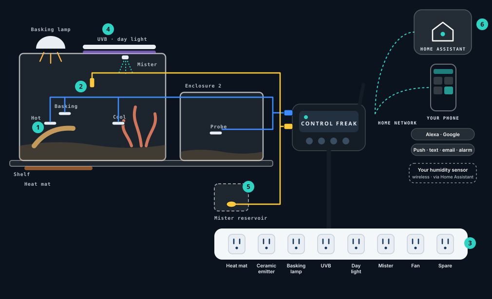

How many apps do you open to run your home?
Terrarium Control Pro ships with Home Assistant and the Control Freak integration already set up, so your enclosures and the rest of your smart home meet in one place. Connect the devices you already own and simplify to a single app. Multi-platform integration built in: ask Alexa what the status is, tell Google to adjust the temperature, and receive automated voice alerts to let you know when something is out of balance. Home Assistant stays on your home network. Alerts reach you by push, text, email or alarm — including when you’re away.
Built for keepers with 1–3 enclosures.
For keepers who want each heat source holding its own setpoint, lights on a natural day, and misting on time — without stacking a separate thermostat per enclosure or juggling vendor apps. Hands-on hobbyists and breeders who already run (or want) Home Assistant.
What makes it different
One kit for 2–3 enclosures
8 switched outlets and 4 temperature probes, with a thermostat on any outlet — instead of one thermostat per enclosure.
Heat control stays in your home
The controller runs heat locally, so a Wi-Fi drop or a server outage changes nothing.
Over-temperature cutoff and probe check
If a probe reads too hot, or is unplugged, its heat outlet turns off and you’re told.
Home Assistant, with full control
Setpoints and outlets work from your dashboards, not read-only. Multi-platform integration built in.
Day/night cycles and seasonal ramps
Lights and temperatures follow a natural day, with editable profiles to start from.
Misting on schedule
Timed misting from a switched outlet.
Set up in minutes
Scan the QR code. Keyed, colour-coded plugs only fit their port.
What’s in Terrarium Control Pro
- Controller with Home Assistant + Control Freak integration
- Power Hub — 8 switched on/off outlets (heat mats, ceramic emitters, UVB, day lights, fans, mister)
- 4 temperature probes (hot side, cool side, basking spot, second enclosure)
- Door switch and mister reservoir float — Concept, pending confirmation
Power Hub outlets are on/off only.
Humidity, honestly
Add humidity through Home Assistant. Pair a Zigbee, Z-Wave or Wi-Fi humidity sensor you choose with the pre-installed Home Assistant hub — your own gear, not part of the kit.
Later options may include extra temperature probes and a second Power Hub. What it isn’t: no subscription, no species care guarantees, and the Power Hub doesn’t dim lamps.
Your enclosures, and every smart thing in your home, in one app.
Terrarium Control Pro comes with Home Assistant already installed and the Control Freak integration already connected. You get everything people love about it, without the setup. Just plug it in.
One app. No more app juggling.
How many apps do you open today? Home Assistant puts your shelf and the rest of your smart home in one place, so you have one app to check and one to control.
Your brands finally work together
Home Assistant works with over 1,000 brands through 1,500+ integrations. Lights, plugs, thermostats, locks, speakers and cameras you already own can finally talk to each other.
Works when the internet doesn’t
It runs on the controller on your home network, not in someone else’s cloud, so it answers right away and keeps working when the internet doesn’t. Your data stays home.
Ask, don’t open
Ask Alexa what the status is, tell Google to adjust the temperature, or use Siri through HomeKit, and get automated voice alerts when something is out of balance.
Peace of mind, all over the house
Anything your shelf knows can set off something else: lights, speakers, thermostats and alerts on every phone. A few ideas are below.
Nobody can switch it off
Your setup lives in your home, not on a company’s server. Home Assistant is open source, and run by a non-profit that can’t be sold. Control Freak adds no subscription.
Ideas you can build in Home Assistant · examples with your own devices
Lights to night
When the enclosures switch to night, the room lamp dims too.
Humidity, your way
Add your own wireless humidity sensor; it shows beside the temperatures.
Over-temperature cutoff
Speakers announce which enclosure, and your phone gets a push.
Home Assistant figures: home-assistant.io, October 2026. Home Assistant is a trademark of the Open Home Foundation. Your lights, speakers and thermostat aren’t in the box. Concept · example automations.
One controller for the whole shelf.
Heat, light and misting for up to three enclosures. From one controller. No subscription.

- Temperature probes (4 in Pro)Hot side, cool side, basking spot and a second enclosure — a thermostat on any outlet. Too hot or a probe unplugged: heat turns off and you’re told.
- Door switchPauses misting and fans while you’re feeding. Concept.
- Power Hub8 on/off outlets: heat mat, ceramic emitter, basking lamp, UVB, day light, mister, fan and a spare.
- Day/night cyclesLights and temperatures follow a natural day, with seasonal ramps.
- Mister reservoir floatStops misting before the reservoir runs dry. Concept.
- Home Assistant, full controlSetpoints and outlets from your dashboards. Add humidity with your own wireless sensor.
Try the home screen
Tap the gradient strip to nudge a setpoint, flip day and night, try the door-open Concept, or preview a sample over-temperature alert.
This is a marketing simulation with example data — not live hardware and not the real app. No login, no cloud.
Join the beta
We’re looking for keepers with two or more enclosures to test Terrarium Control Pro before launch.
Join the betaPrice to be announced.